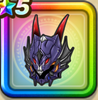

竜王の兜
攻略班 8.0点 / ドラゴン系への耐性+5%けもの系への耐性+5%ゾンビ系への耐性+5%けもの系への耐性+5%竜王へのダメージ+10%【レンジャー】ギラ属性ダメージ+2%ギラ属性ダメージ+5%
くわしい特徴
【レベル別習得スキル】 Lv1ドラゴン系への耐性+5% Lv5竜王へのダメージ+10% Lv8きようさ+7 Lv10けもの系への耐性+5% Lv12【レンジャー】ギラ属性ダメージ+2% Lv15ギラ属性ダメージ+5% Lv18ゾンビ系への耐性+5% Lv20【レンジャー】守備力+8 Lv23守備力+5 Lv25けもの系への耐性+5% 【限界突破スキル】 1凸攻撃力+5 2凸守備力+5 3凸すばやさ+7 4凸さいだいHP+10